Soups
 Caldo Verde
Caldo Verde Cream of Spinach Soup
Cream of Spinach Soup Curry Butternut Squash & Apple Soup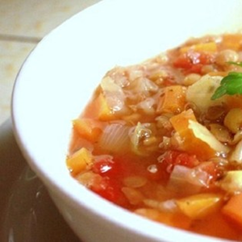Winter Lentil SoupCaldo VerdeCream of Spinach SoupCurry Butternut Squash & Apple Soup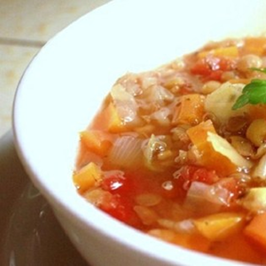Winter Lentil Soup
Curry Butternut Squash & Apple Soup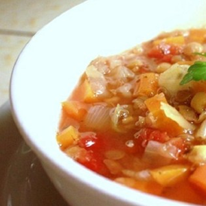Winter Lentil SoupCaldo VerdeCream of Spinach SoupCurry Butternut Squash & Apple Soup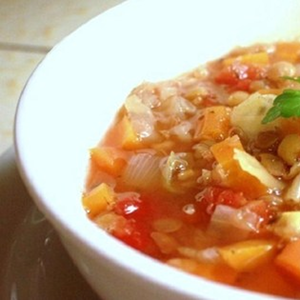Winter Lentil Soup Beef Bourguignon
Beef Bourguignon Chicken Cordon Bleu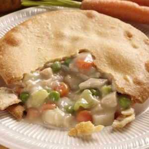Chicken Pot PieChicken Breasts with Caper Cream Sauce
Chicken Cordon Bleu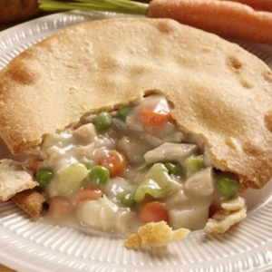Chicken Pot PieChicken Breasts with Caper Cream Sauce Chole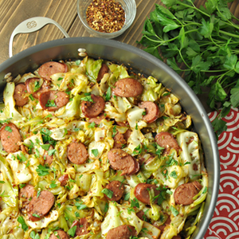Kielbasa and Cabbage
Chole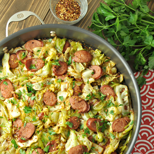Kielbasa and Cabbage Kofta Kebabs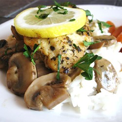Lemon Chicken with Mushroom Sauce
Kofta Kebabs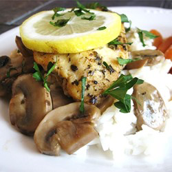Lemon Chicken with Mushroom Sauce Ratatouille
Ratatouille Roast Leg of Lamb with Rosemary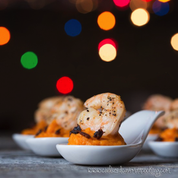Shrimp with Sweet Potatoes and Bacon
Roast Leg of Lamb with Rosemary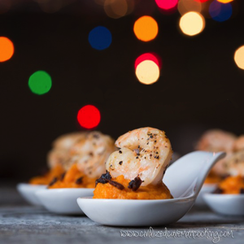Shrimp with Sweet Potatoes and Bacon Sloppy Joe Sandwiches
Sloppy Joe Sandwiches Bok Choy with Garlic
Bok Choy with Garlic Bourbon Glazed Carrots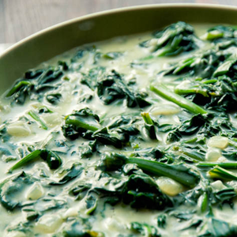Creamed Spinach
Bourbon Glazed Carrots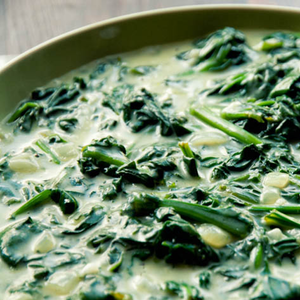Creamed Spinach Garlic Broccoli
Garlic Broccoli Hummus
Hummus Sweet Potatoes with Honey and Rosemary
Sweet Potatoes with Honey and Rosemary Tzatziki
Tzatziki